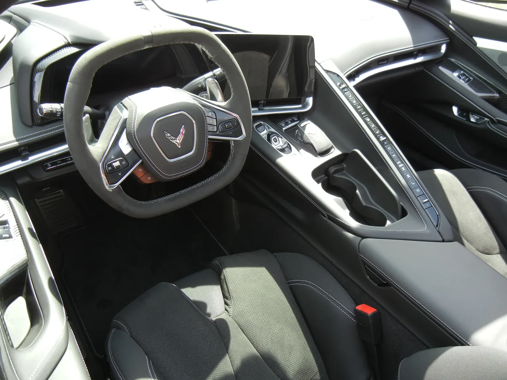
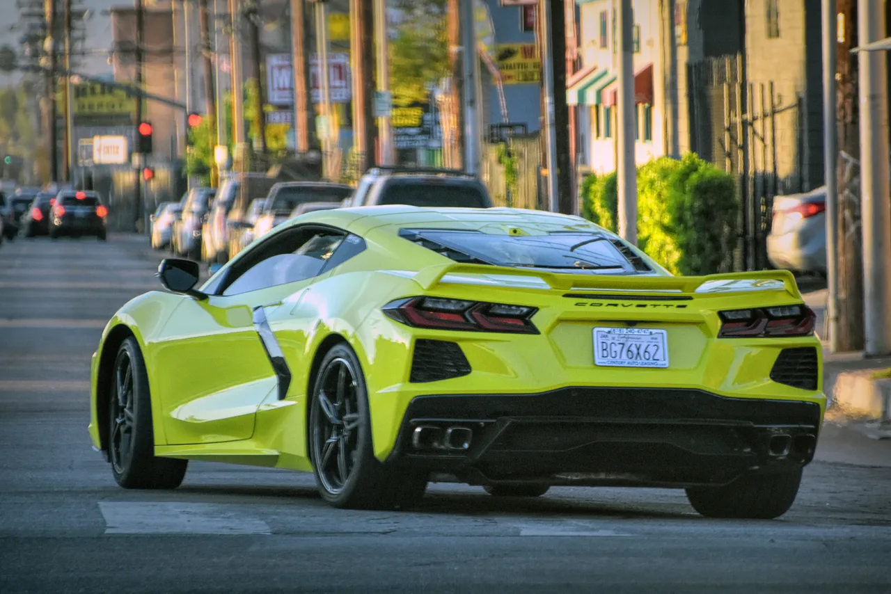
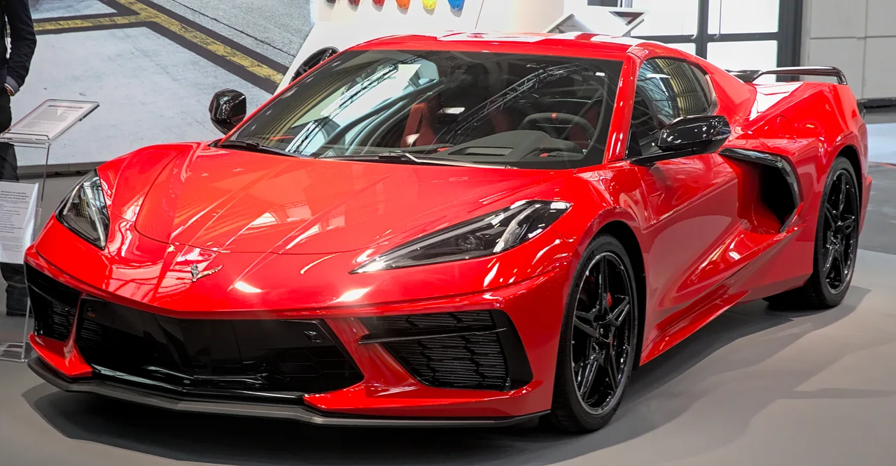

▲ 쉐보레 코르벳 C8. 레즈바니 비스트X는 이 미드십 코르벳의 차체와 플랫폼을 기반으로 제작된다(실제 비스트X 사진은 아니며, 기반이 되는 도너카 코르벳 C8을 보여준다)
미국의 부티크 튜너 레즈바니(Rezvani)가 코르벳 C8 기반의 새로운 하이퍼카 '비스트X'를 공개했습니다. 커스텀 제작된 트윈터보 6.2리터 V8 엔진을 얹어 1,560마력, 1,280lb-ft의 토크를 냅니다. 0-60마일(약 96.5km/h) 가속은 단 1.9초. 웬만한 슈퍼카는 물론 잘 튜닝된 코르벳조차 가볍게 앞지르는 수치입니다. 전 세계 생산량은 단 5대로 한정됩니다.
1. 왜 하필 코르벳 C8인가
레즈바니는 이전에도 코르벳 C8을 기반으로 방탄 사양과 연막 장치까지 갖춘 '비스트'를 선보인 바 있습니다. 이번 비스트X는 그 후속작 성격으로, C8의 미드십 레이아웃을 그대로 유지하면서 차체·파워트레인·구동계를 대대적으로 다시 설계했습니다. 코르벳 C8은 미국산 미드십 스포츠카 중 유일하게 튜너들이 자유롭게 개조할 수 있는 대중적인 플랫폼이라, 레즈바니 같은 커스텀 제작사들에게는 최적의 캔버스로 꼽힙니다.

▲ 코르벳 C8 실내. 비스트X는 이 스퀘어형 스티어링휠과 스퀘어 콕핏 구조를 유지하되, 내부 트림과 소재는 레즈바니만의 사양으로 새롭게 마감된다
2. 1,560마력의 정체 — 커스텀 트윈터보 V8
비스트X의 심장은 레즈바니가 직접 설계한 커스텀 트윈터보 6.2리터 V8입니다. 완전 단조된 내부 부품을 사용해 고출력·고회전 환경에서도 내구성을 확보했다는 설명입니다. 여기에 8단 듀얼클러치 변속기와 4륜구동 시스템을 조합해, 1,560마력이라는 극단적인 출력을 노면에 최대한 온전히 전달하도록 설계됐습니다. 참고로 코르벳 순정 기반 최고 성능 모델인 ZR1 계열조차 이 수치에는 크게 못 미치는 수준이라, 비스트X의 출력이 얼마나 파격적인지 짐작할 수 있습니다.
| 항목 | 스펙 |
|---|---|
| 엔진 | 커스텀 트윈터보 6.2L V8 |
| 최고출력 | 1,560마력 |
| 최대토크 | 1,280lb-ft |
| 0-60마일 | 1.9초 |
| 변속기 | 8단 듀얼클러치 |
| 구동방식 | 4륜구동(AWD) |
| 생산량 | 전 세계 5대 한정 |

▲ 코르벳 C8 후면. 미드십 구조와 넓은 리어 펜더는 비스트X가 극단적인 출력을 감당하기 위한 기초 설계로 활용된다(도너카 이미지)
3. 숫자만 요란한 것은 아닐까 — 검증이 필요한 이유
다만 업계 일각에서는 신중한 시각도 있습니다. 소규모 부티크 제작사가 발표하는 파격적인 성능 수치는 독립적인 실측 검증을 거치지 않은 경우가 많기 때문입니다. 실제로 모터1 등 외신은 "이 수치들이 헤드라인용 숫자와 소규모 생산 계획에 그치지 않는다는 것을 증명하려면 완전한 독립 테스트가 필요하다"고 지적하기도 했습니다. 1,560마력이라는 수치 자체가 검증되지 않은 제조사 공식 발표라는 점을 감안하고 받아들일 필요가 있습니다.

▲ 모터쇼에 전시된 코르벳 C8. 레즈바니는 이런 '익숙한 하드웨어를 훨씬 더 극단적인 것으로 바꾸는' 방식으로 브랜드 정체성을 쌓아왔다
4. 정리 — 미국산 하이퍼카의 또 다른 실험
비스트X는 페라리나 람보르기니처럼 처음부터 하이퍼카로 설계된 차가 아니라, 대중적인 스포츠카를 극한까지 개조한 결과물이라는 점에서 흥미롭습니다. 5대뿐이라는 희소성과 1,560마력이라는 숫자만으로도 화제성은 충분합니다. 다만 가격은 아직 공개되지 않았고, 성능 수치의 독립 검증도 남아있는 만큼, 실제 인도와 실측 테스트 결과가 나올 때까지는 신중하게 지켜볼 필요가 있습니다.